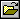
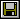
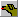
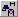
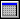
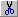

New - Create
a new file with a default configuration.
New - Create
a new file with a default configuration.The following is a listing of all the toolbar buttons. Toolbar buttons are a quick way of performing selected actions.
New - Create
a new file with a default configuration.
 Open - Open an existing file.
 Save - Save the current file.
 New Dog - Create a new dog.
 New Title - Create a new title for the current dog.
New Title - Create a new title for the current dog.
New Trial - Create a new trial for the current dog.
 New Run - Create a new run in the current trial.
 New Calendar - Create a new calendar entry.
New Training Log - Create a new training log.
 Cut - Copy the currently selected item to the clipboard and then delete it.
 Copy - Copy the currently selected item to the clipboard.
Copy - Copy the currently selected item to the clipboard.
Paste - Paste what is on the clipboard.
 Print Preview - See what will be printed before printing it.
Print Preview - See what will be printed before printing it.
Print - Print the current view.
About - Displays the about dialog.